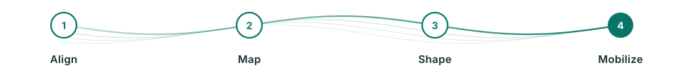

Digital Excellence
ที่ปรึกษา Digital Transformation ที่เชื่อมกลยุทธ์ กระบวนการ เทคโนโลยี และการยอมรับของผู้ใช้งาน
Elite Knight ช่วยแปลงแผนดิจิทัลเป็น roadmap, portfolio และ delivery governance ที่ทำได้จริง พร้อมวัดผลลัพธ์ทางธุรกิจ

ผลลัพธ์ที่ได้
บริการนี้ช่วยให้องค์กรเห็นทิศทางชัด วัดผลได้ และขยายผลได้จริง
- Digital strategy และ transformation roadmap
- Process improvement และ automation use cases
- Technology delivery assurance และ vendor governance
- Change management และ adoption plan
เหมาะกับองค์กรแบบไหน
เหมาะกับองค์กรที่อยากให้ Digital Transformation ออกจากสไลด์และกลายเป็นผลลัพธ์จริง
เราช่วยทำให้กลยุทธ์ดิจิทัลชัดขึ้น แปลงเป็น portfolio ที่บริหารได้ และออกแบบการเปลี่ยนแปลงให้คน กระบวนการ และเทคโนโลยีไปด้วยกัน
- มีหลายโครงการดิจิทัลแต่ priority, owner, budget หรือ dependency ยังไม่ชัด
- ต้องการปรับกระบวนการและประสบการณ์ลูกค้าหรือพนักงานด้วย automation และ analytics
- ต้องการ independent view เพื่อช่วยกำกับ vendor, delivery risk และ benefits realization
สิ่งที่เราช่วยทำ
จากโจทย์ที่คลุมเครือสู่แผนงานที่ทีมบริหารใช้ตัดสินใจได้
รูปแบบงานสามารถเริ่มจาก assessment หรือ workshop สั้น ๆ แล้วต่อยอดเป็น roadmap, governance และการกำกับการส่งมอบตามระดับความพร้อมขององค์กร
Digital Strategy to Portfolio
แปลง ambition ให้เป็น portfolio, roadmap และ initiative charter ที่ชัดเรื่อง value, owner และ timeline
Process & Experience Redesign
วิเคราะห์ journey, pain point, bottleneck และโอกาส automation เพื่อออกแบบกระบวนการใหม่ที่ใช้งานจริง
Delivery Governance
วาง governance, steering rhythm, RAID management และ dashboard เพื่อลดความเสี่ยงระหว่างส่งมอบ
Change & Adoption
ออกแบบ stakeholder plan, communication, training และ adoption metric เพื่อให้คนใช้ระบบและวิธีทำงานใหม่
แนวทางการทำงาน
ทำงานแบบมีโครงสร้าง เห็นภาพเร็ว และเหลือสิ่งที่ทีมใช้ต่อได้จริง

- 1
Align
ทำให้ผู้บริหารเห็นภาพเดียวกันเรื่องเป้าหมาย scope และเกณฑ์ความสำเร็จ
- 2
Map
วิเคราะห์ process, customer/employee journey, data flow และ technology landscape
- 3
Shape
จัดลำดับ initiatives และออกแบบ roadmap พร้อม dependency และ benefits
- 4
Mobilize
เตรียม governance, working team, change plan และตัวชี้วัดสำหรับเริ่มส่งมอบ
สิ่งที่ส่งมอบ
เอกสารและเครื่องมือที่ช่วยให้ทีมเดินหน้าต่อได้ ไม่ใช่แค่รายงานสรุป
แต่ละงานสามารถปรับขอบเขตให้เหมาะกับระยะเวลา งบประมาณ และระดับความพร้อมขององค์กรได้
- Digital transformation roadmap ที่เชื่อมกับเป้าหมายธุรกิจ
- Initiative portfolio และ business case
- Backlog สำหรับปรับปรุง process และ experience
- Delivery governance dashboard
- แผน change management และ adoption
FAQ
คำถามที่พบบ่อย
Digital Transformation ควรเริ่มจากเทคโนโลยีหรือธุรกิจ
ควรเริ่มจากเป้าหมายธุรกิจและ pain points ก่อน แล้วจึงเลือกเทคโนโลยีและออกแบบ operating model ที่รองรับ
ทำไมหลายโครงการ Digital Transformation ไม่เกิดผลลัพธ์
สาเหตุหลักมักมาจาก portfolio ไม่ชัด ขาด ownership, governance, adoption และการวัด benefits หลังส่งมอบ
Elite Knight ช่วยวัดผล Digital Transformation อย่างไร
เราช่วยกำหนด KPI, benefits realization, dashboard และ governance cadence สำหรับผู้บริหาร